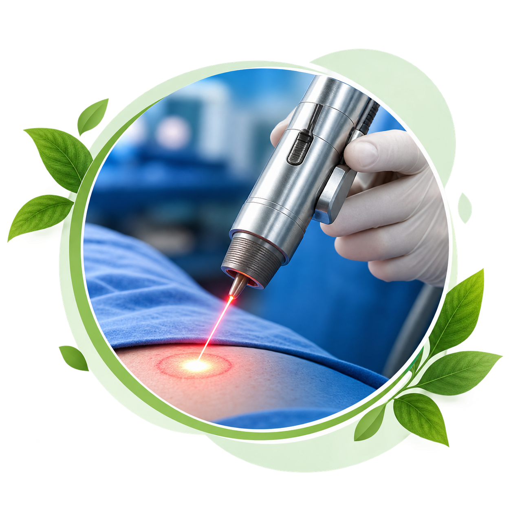
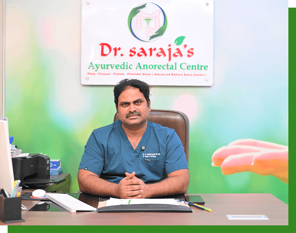
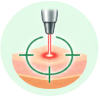

Detailed Consultation
Your symptoms and medical history are reviewed.
Laser surgery uses focused energy to treat the affected area with precision while minimizing disruption to surrounding tissue. It may help reduce postoperative discomfort, support faster healing, and allow patients to return to routine activities sooner, depending on the condition and individual treatment plan.
Laser treatment is not one-size-fits-all. Its benefits and suitability depend on the specific condition, severity, treatment area, and procedure involved. A thorough clinical evaluation helps determine whether laser surgery is appropriate and what outcomes may reasonably be expected.
Laser devices deliver controlled energy to the targeted treatment area.
Selected laser procedures may involve smaller treatment areas and limited tissue disruption.
The treatment can be directed towards the intended tissue in appropriate procedures.
Aftercare is planned to support healing and a safe return to normal activities.
For appropriately selected patients, laser-assisted treatment may offer several advantages compared with some conventional surgical approaches.
A Minimally Invasive Approach - Many laser procedures are designed to treat the targeted area while limiting unnecessary disruption to surrounding tissue.
Precision - Controlled laser energy can be focused on the intended treatment area.
Potentially Less Tissue Disruption - Selected procedures may involve less disruption compared with some conventional surgical techniques.
Reduced Bleeding in Selected Procedures - Laser energy may help control small blood vessels during certain procedures.
Recovery-Focused Treatment - Some patients may return to routine activities sooner, depending on the procedure and individual healing.


Laser technology allows controlled energy to be delivered to a specific treatment area. This focused approach can be useful in procedures where precise tissue treatment is required.
Every procedure is different, but these are some of the features patients commonly discuss when considering laser treatment.

Laser energy can be directed towards the intended tissue according to the specific procedure.
Selected laser procedures can involve smaller treatment areas than some traditional operations.
Some patients may experience a quicker return to routine activities, depending on the procedure.
A minimally invasive approach may support a more comfortable post-procedure experience in suitable cases.
Post-treatment guidance and follow-up help monitor healing and recovery.
Treatment is selected based on the condition, clinical findings and patient requirements.
Because many laser procedures are minimally invasive, patients may experience a recovery process that is more comfortable in appropriate cases.
Laser treatment may be considered for selected anorectal and related conditions. Suitability is determined after clinical evaluation.
Laser-assisted techniques may be considered for selected haemorrhoidal conditions.
The fistula tract may be cleaned and prepared before the laser treatment is performed.
Selected fistula cases may be evaluated for minimally invasive laser-based treatment.
Laser techniques may be considered in selected cases after appropriate assessment.
Selected pilonidal sinus cases may be considered for laser-assisted treatment.
Laser surgery is only one part of the treatment journey. Proper assessment, preparation and follow-up are equally important.
Your symptoms and medical history are reviewed.
The most appropriate procedure is selected according to your condition.
Controlled laser energy is used according to the planned treatment technique.
You receive instructions to support healing and recovery.
Your progress can be reviewed and further guidance provided.
Make an appointment and get expert guidance for your condition.
We combine ancient Ayurvedic wisdom with modern technology to deliver safe,
effective, and lasting results.
20+ years of expertise in Ayurvedic healthcare.
USFDA-approved laser equipment for better outcomes.
Comfortable treatments with faster recovery.
Recover faster with effective fistula treatment.
Personalized care tailored to your needs.
Quality care with transparent pricing and no hidden costs.

Chief Ayurvedic Proctologist & Kshara Sutra Specialist

Flat No. 302, Abhinandana Jewel, Lanco Hills Road, Opp. HP Gas Godown, Shivapuri Colony, Muppas Panchavati Colony, Manikonda, Hyderabad, Telangana - 500089

Metro Pillar No. 817, People's Hospital Complex, 3rd Floor, Beside Narayana Junior College, KPHB, Kukatpally, Hyderabad, Telangana - 500072
Discover the heartwarming healing journeys of our patients at Dr. Saraja’s Ayurvedic Anorectal Hospital. Their experiences reflect our commitment to personalised Ayurvedic care, compassionate treatment, and lasting healing.
The treatment was simple, comfortable and the doctor explained every step clearly. I feel much better now.
NareshGoogle ReviewProfessional consultation and good follow-up. I would recommend the clinic to anyone looking for expert care.
RameshGoogle ReviewThe treatment was simple, comfortable and the doctor explained every step clearly. I feel much better now.
PrasadGoogle ReviewProfessional consultation and good follow-up. I would recommend the clinic to anyone looking for expert care.
GopiGoogle ReviewSpeak with our care team and schedule a private consultation at your preferred
Hyderabad centre.